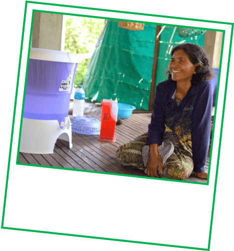

មានពេល ២ នាទីទេ?
សូមអានព័ត៌មានគួរឱយ
កុញាក់ជូអីល
(និងវិធីដលែអុនកកំពុងជួយ)។
រៀល ១០០ ពីការជិះរថយនុត Grab ឬការបញជាទិញរបស់អុនក នឹងត្រូវ
បានប្រើសមុរាប់គម្មរាងជួយសត្វវឮរ និងធម្មមជាតិ។
នេះជាអ្វីដែលកើតឡើងនៅពេល
អ្នកចូលរួមកម្មវិធីបៃតងរបស់យើង៖
បម្លែងប្រាក់រៀលតិចៗ
របស់អ្នកទៅជាការផ្លាស់ប្តូរធំៗសម្រាប់ភពផែនដី

គួរឱ្យសោកស្តាយការកាប់បំផ្លាញព្រៃឈើកំពុង បញ្ចប់ការច្រៀងនេះ។ ការគាំទ្ររបស់អ្នកអាច ជួយយើងការពារស្វា និងសត្វផ្សេងទៀតនៅ
ស្ថានសួងសត្វព្រៃកែវសីមា។
មិនមែនមានតែសត្វទេ។ ការការពារព្រៃឈើ នេះក៏
ជួយរក្សាទុក CO₂ ចំនួនលានតោន ផង
ដែរ។ ជាជ័យជំនះសម្រាប់សត្វព្រៃនិង ពិភពលោក។
តើអ្នកដឹងទេ?
ស្វាចិញ្ចើមលឿងច្រៀង បទដែលអាចឮដល់ ១ គីឡូម៉ែត្រ។
មានសត្វ
ជាង ៦០ ប្រភេទដែលជិតផុតពូជ
រស់នៅទីនេះ រួមមានស្វាដូកខ្មៅ និងដំរីអាស៊ី។
សហគមន៍ជាច្រើននៅជនបទកម្ពុជា នៅតែដុត ឈើដើម្បីធ្វើឱ្យទឹកមានសុវត្ថិភាព។
ការគាំទ្រ របស់អ្នកចំពោះគម្រោង
តម្រងទឹកសេរ៉ាមិច របស់ Hydrologic
ជួយផ្លាស់ប្តូរនេះ។
នេះជាวิธีដ៏សាមញ្ញ ប៉ុន្តែវាជួយ
សន្សំ ឈើ ១៨,០០០ តោន និង កាត់បន្ថយការ បញ្ចេញ CO₂ ចំនួន ៤១,០០០ តោន
រៀងរាល់ឆ្នាំ។
តើអ្នកដឹងទេ?
ការចំហាយទឹកពិតប្រាកដ ជាដុតភពផែនដី។

ពួកគេផ្តល់នូវ
តម្រងដែលមានតម្លៃសមរម្យ
ដើម្បីផ្គត់ផ្គង់ទឹកស្អាត ៣០លីត្រក្នុងមួយថ្ងៃ។ មិន ចាំបាច់ចំហាយទេ!

តើអ្នកអាចទាយបានទេថា មានដើមឈើប៉ុន្មាន
ដែលបានចូលរួមដល់ពេលនេះ?
បង្ហាញថា ការផ្លាស់ប្តូរតិចៗអាចក្លាយជារឿង ធំបាន — មែនទេ? យើងត្រូវបន្ត។
ធម្មជាតិ កំពុងរំពឹងលើយើង!
សំណួរលឿន។
ចាប់តាំងពីឆ្នាំ ២០២១ មក ប្រើប្រាស់ Grab
ដូចជាអ្នកបានជួយអភិរក្សព្រៃឈើទូទាំងអាស៊ី អាគ្នេយ៍។

ដើមឈើ ១.២ លានដើម